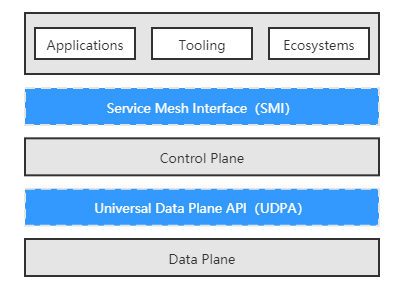
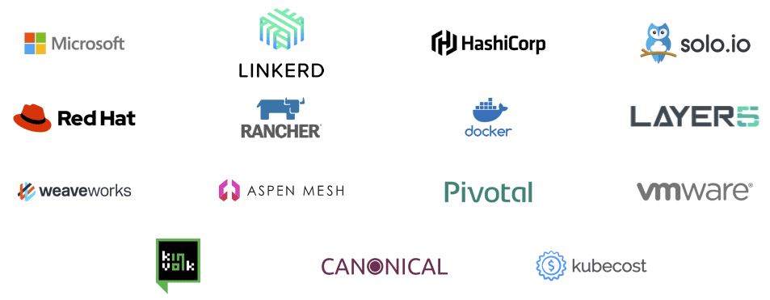
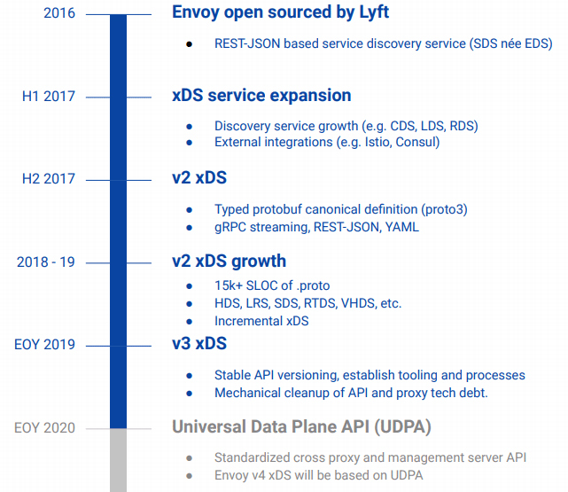

- 00 _导读 _ 什么是“The Fenix Project”？.md.html
- 00 开篇词 _ 如何构建一个可靠的分布式系统？.md.html
- 01 _ 原始分布式时代：Unix设计哲学下的服务探索.md.html
- 02 _ 单体系统时代：应用最广泛的架构风格.md.html
- 03 _ SOA时代：成功理论与失败实践.md.html
- 04 _ 微服务时代：SOA的革命者.md.html
- 05 _ 后微服务时代：跨越软件与硬件之间的界限.md.html
- 06 _ 无服务时代：“不分布式”云端系统的起点.md.html
- 07 _ 远程服务调用（上）：从本地方法到远程方法的桥梁.md.html
- 08 _ 远程服务调用（下）：如何选择适合自己的RPC框架？.md.html
- 09 _ RESTful服务（上）：从面向过程编程到面向资源编程.md.html
- 10 _ RESTful服务（下）：如何评价服务是否RESTful？.md.html
- 11 _ 本地事务如何实现原子性和持久性？.md.html
- 12 _ 本地事务如何实现隔离性？.md.html
- 13 _ 全局事务和共享事务是如何实现的？.md.html
- 14 _ 分布式事务之可靠消息队列.md.html
- 15 _ 分布式事务之TCC与SAGA.md.html
- 16 _ 域名解析系统，优化HTTP性能的第一步.md.html
- 17 _ 客户端缓存是如何帮助服务器分担流量的？.md.html
- 18 _ 传输链路，优化HTTP传输速度的小技巧.md.html
- 19 _ 如何利用内容分发网络来提高网络性能？.md.html
- 20 _ 常见的四层负载均衡的工作模式是怎样的？.md.html
- 21 _ 服务端缓存的三种属性.md.html
- 22 _ 分布式缓存如何与本地缓存配合，提高系统性能？.md.html
- 23 _ 认证：系统如何正确分辨操作用户的真实身份？.md.html
- 24 _ 授权（上）：系统如何确保授权的过程可靠？.md.html
- 25 _ 授权（下）：系统如何确保授权的结果可控？.md.html
- 26 _ 凭证：系统如何保证与用户之间的承诺是准确完整且不可抵赖的？.md.html
- 27 _ 保密：系统如何保证敏感数据无法被内外部人员窃取滥用？.md.html
- 28 _ 传输（上）：传输安全的基础，摘要、加密与签名.md.html
- 29 _ 传输（下）：数字证书与传输安全层.md.html
- 30 _ 验证：系统如何确保提交给服务的数据是安全的？.md.html
- 31 _ 分布式共识（上）：想用好分布式框架，先学会Paxos算法吧.md.html
- 32 _ 分布式共识（下）：Multi Paxos、Raft与Gossip，分布式领域的基石.md.html
- 33 _ 服务发现如何做到持续维护服务地址在动态运维中的时效性？.md.html
- 34 _ 路由凭什么作为微服务网关的基础职能？.md.html
- 35 _ 如何在客户端实现服务的负载均衡？.md.html
- 36 _ 面对程序故障，我们该做些什么？.md.html
- 37 _ 要实现某种容错策略，我们该怎么做？.md.html
- 38 _ 限流的目标与模式.md.html
- 39 _ 如何构建零信任网络安全？.md.html
- 40 _ 如何实现零信任网络下安全的服务访问？.md.html
- 41 _ 分布式架构中的可观测到底说的是什么？.md.html
- 42 _ 分析日志真的没那么简单.md.html
- 43 _ 一个完整的分布式追踪系统是什么样子的？.md.html
- 44 _ 聚合度量能给我们解决什么问题？.md.html
- 45 _ 模块导学：从微服务到云原生.md.html
- 46 _ 容器的崛起（上）：文件、访问、资源的隔离.md.html
- 47 _ 容器的崛起（下）：系统、应用、集群的封装.md.html
- 48 _ 以容器构建系统（上）：隔离与协作.md.html
- 49 _ 以容器构建系统（下）：韧性与弹性.md.html
- 50 _ 应用为中心的封装（上）：Kustomize与Helm.md.html
- 51 _ 应用为中心的封装（下）：Operator与OAM.md.html
- 52 _ Linux网络虚拟化（上）：信息是如何通过网络传输被另一个程序接收到的？.md.html
- 53 _ Linux网络虚拟化（下）：Docker所提供的容器通讯方案有哪些？.md.html
- 54 _ 容器网络与生态：与CNM竞争过后的CNI下的网络插件生态.md.html
- 55 _ 谈谈Kubernetes的存储设计理念.md.html
- 56 _ Kubernetes存储扩展架构：一个真实的存储系统如何接入或移除新存储设备？.md.html
- 57 _ Kubernetes存储生态系统：几种有代表性的CSI存储插件的实现.md.html
- 58 _ Kubernetes的资源模型与调度器设计.md.html
- 59 _ 透明通讯的涅槃（上）：通讯的成本.md.html
- 60 _ 透明通讯的涅槃（下）：控制平面与数据平面.md.html
- 61 _ 服务网格与生态：聊聊服务网格的两项标准规范.md.html
- 62 _ Fenix's Bookstore的前端工程.md.html
- 63 _ 基于Spring Boot的单体架构.md.html
- 64 _ 基于Spring Cloud的微服务架构.md.html
- 65 _ 基于Kubernetes的微服务架构.md.html
- 66 _ 基于Istio的服务网格架构.md.html
- 67 _ 基于云计算的无服务架构.md.html
- 春节特别放送（上）_ 有的放矢，事半功倍.md.html
- 春节特别放送（下）_ 积累沉淀，知行合一.md.html
- 用户故事 _ 詹应达：持续成长，不惧未来.md.html
- 结束语 _ 程序员之路.md.html
- 结课测试 _ 一套习题，测出你的掌握程度.md.html
- 捐赠
61 _ 服务网格与生态：聊聊服务网格的两项标准规范
你好，我是周志明。这节课，我们来了解服务网格的主要规范与主流产品。
服务网格目前仍然处于技术浪潮的早期，不过现在业界早已普遍认可它的价值，基本上所有希望能影响云原生发展方向的企业都已经参与了进来。从最早2016年的Linkerd 和 Envoy，到2017年Google、IBM和Lyft共同发布的Istio，再到后来CNCF把Buoyant的 Conduit 改名为 Linkerd2，再度参与Istio竞争。
而到了2018年后，服务网格的话语权争夺战已经全面升级到由云计算巨头直接主导，比如Google把Istio搬上Google Cloud Platform，推出了Istio的公有云托管版本Google Cloud Service Mesh；亚马逊推出了用于AWS的App Mesh；微软推出了Azure完全托管版本的Service Fabric Mesh，发布了自家的控制平面 Open Service Mesh；国内的阿里巴巴也推出了基于Istio的修改版 SOFAMesh，并开源了自己研发的 MOSN 代理。可以说，云计算的所有玩家都正在布局服务网格生态。
不过，市场繁荣的同时也带来了碎片化的问题。要知道，一个技术领域能够形成被业界普遍承认的规范标准，是这个领域从分头研究、各自开拓的萌芽状态，走向工业化生产应用的成熟状态的重要标志，标准的诞生可以说是每一项技术普及之路中都必须经历的“成人礼”。
在前面的课程中，我们接触过容器运行时领域的 CRI规范、容器网络领域的 CNI规范、容器存储领域的 CSI规范，尽管服务网格诞生至今只有数年时间，但作为微服务、云原生的前沿热点，它也正在酝酿自己的标准规范，也就是这节课我们要讨论的主角：服务网格接口（Service Mesh Interface，SMI）与通用数据平面API（Universal Data Plane API，UDPA）。现在我们先来看下这两者之间的关系：

SMI规范与UDPA规范
实际上，服务网格是数据平面产品与控制平面产品的集合，所以在规范制订方面，很自然地也分成了两类：
- SMI规范提供了外部环境（实际上就是Kubernetes）与控制平面交互的标准，使得Kubernetes及在其之上的应用，能够无缝地切换各种服务网格产品；
- UDPA规范则提供了控制平面与数据平面交互的标准，使得服务网格产品能够灵活地搭配不同的边车代理，针对不同场景的需求，发挥各款边车代理的功能或者性能优势。
可以发现，这两个规范并没有重叠，它们的关系与我在容器运行时中介绍到的CRI和OCI规范之间的关系很相似。下面我们就从这两个规范的起源和支持者的背景入手，了解一下它们要解决的问题及目前的发展状况。
服务网格接口
在2019年5月的KubeCon大会上，微软联合Linkerd、HashiCorp、Solo、Kinvolk和Weaveworks等一批云原生服务商，共同宣布了Service Mesh Interface规范，希望能在各家的服务网格产品之上建立一个抽象的API层，然后通过这个抽象来解耦和屏蔽底层服务网格实现，让上层的应用、工具、生态系统可以建立在同一个业界标准之上，从而实现应用程序在不同服务网格产品之间的无缝移植与互通。
如果你更熟悉Istio的话，那你可以把SMI的作用理解为是给服务网格提供了一套Istio中，VirtualService、DestinationRule、Gateway等私有概念对等的行业标准版本，只要使用SMI中定义的标准资源，应用程序就可以在不同的控制平面上灵活迁移，唯一的要求是这些控制平面都支持了SMI规范。
SMI与Kubernetes是彻底绑定的，规范的落地执行完全依靠在Kubernetes中部署SMI定义的CRD来实现，这一点在SMI的目标中被形容为“Kubernetes Native”，也就说明了微软等云服务厂商已经认定容器编排领域不会有Kubernetes之外的候选项了，这也是微软选择在KubeCon大会上公布SMI规范的原因。
但是在另外一端 ，SMI并不与包括行业第一的Istio，或者是微软自家的Open Service Mesh在内的任何控制平面所绑定，这点在SMI的目标中被形容为“Provider Agnostic”，说明微软务实地看到了服务网格领域目前还处于群雄混战的现状。Provider Agnostic对消费者有利，但对目前处于行业领先地位的Istio肯定是不利的，所以我们完全可以理解为什么SMI没有得到Istio及其背后的Google、IBM与Lyft的支持。
然而，在过去两年里，Istio无论是发展策略上、还是设计上（过度设计）的风评都不算很好，业界一直在期待Google和Istio能做出改进，这种期待在持续两年的失望之后，已经有很多用户在考虑Istio以外的选择了。
所以，SMI一经发布，就吸引了除Istio之外几乎所有的服务网格玩家的目光，大家全部参与了进来，这恐怕并不只是因为微软号召力巨大的缘故。而且为了对抗Istio的抵制，SMI自己还提供了一个 Istio的适配器，以便使用Istio的程序能平滑地迁移到SMI之上，所以遗留代码并不能为Istio构建出特别坚固的壁垒。
到了2020年4月，SMI被托管到CNCF，成为其中的一个Sandbox项目（Sandbox是最低级别的项目，CNCF只提供有限度的背书），如果能够经过孵化、毕业阶段的话，SMI就有望成为公认的行业标准，这也是开源技术社区里民主管理的一点好处。

SMI规范的参与者
好了，到这里我们就了解了SMI的背景与价值，现在我们再来学习一下SMI的主要内容。目前（v0.5版本）的SMI规范包括四方面的API构成，下面我们就分别来看一下。
- 流量规范（Traffic Specs）
目标是定义流量的表示方式，比如TCP流量、HTTP/1流量、HTTP/2流量、gRPC流量、WebSocket流量等应该如何在配置中抽象和使用。目前SMI只提供了TCP和HTTP流量的直接支持，而且都比较简陋，比如HTTP流量的路由中，甚至连以Header作为判断条件都不支持。
当然，我们可以暂时自我安慰地解释为SMI在流量协议的扩展方面是完全开放的，没有功能也有可能自己扩充，哪怕不支持的或私有协议的流量，也有可能使用SMI来管理。而我们知道，流量表示是做路由和访问控制的必要基础，因为它必须要根据流量中的特征为条件，才能进行转发和控制，而流量规范中已经自带了路由能力，访问控制就被放到独立的规范中去实现了。
- 流量拆分（Traffic Split）
目标是定义不同版本服务之间的流量比例，提供流量治理的能力，比如限流、降级、容错，等等，以满足灰度发布、A/B测试等场景。
SMI的流量拆分是直接基于Kubernetes的Service资源来设置的，这样做的好处是使用者不需要去学习理解新的概念，而坏处是要拆分流量，就必须定义出具有层次结构的Service，即Service后面不是Pod，而是其他Service。而Istio中则是设计了VirtualService这样的新概念来解决相同的问题，它是通过Subset来拆分流量。至于两者孰优孰劣，这就见仁见智了。
- 流量度量（Traffic Metrics）
目标是为资源提供通用集成点，度量工具可以通过访问这些集成点来抓取指标。这部分完全遵循了Kubernetes的Metrics API进行扩充。
- 流量访问控制（Traffic Access Control）
目标是根据客户端的身份配置，对特定的流量访问特定的服务提供简单的访问控制。SMI绑定了Kubernetes的ServiceAccount来做服务身份访问控制，这里说的“简单”不是指它使用简单，而是说它只支持ServiceAccount一种身份机制，在正式使用中这恐怕是不足以应付所有场景的，日后应该还需要继续扩充。
以上这四种API目前暂时都是Alpha版本，也就是意味着它们还不够成熟，随时可能发生变动。从目前的版本来看，至少跟Istio的私有API相比，SMI还没有看到明显的优势，不过考虑到SMI还处于项目早期阶段，不够强大也情有可原，希望未来SMI可以成长为一个足够坚实可用的技术规范，这也有助于避免数据平面出现一家独大的情况，有利于竞争与发展。
通用数据面API
好，现在我们接着来了解一下通用数据面API的规范内容。同样是2019年5月，CNCF创立了一个名为“通用数据平面API工作组”（Universal Data Plane API Working Group，UDPA-WG）的组织，其工作目标是制定类似于软件定义网络中，OpenFlow协议的数据平面交互标准。可以说，工作组的名字被敲定的那一刻，就已经决定了它所产出的标准名字，必定是叫“通用数据平面API”（Universal Data Plane API，UDPA）。
其实，如果不纠结于是否足够标准、是否是由足够权威的组织来制定的话，上节课我介绍数据平面时提到的Envoy xDS协议族，就已经完全满足了控制平面与数据平面交互的需要。
事实上，Envoy正是UDPA-WG工作组的主要成员，在2019年11月的EnvoyCon大会上，Envoy的核心开发者、UDPA的负责人之一，来自Google公司的哈维 · 图奇（Harvey Tuch）做了一场以“The Universal Dataplane API：Envoy’s Next Generation APIs”为题的演讲，他详细而清晰地说明了xDS与UDAP之间的关系：UDAP的研发就是基于xDS的经验为基础的，在未来xDS将逐渐向UDPA靠拢，最终将基于UDPA来实现。

上图是我在哈维 · 图奇的演讲PPT中，截取的UDPA与xDS的融合时间表，在演讲中，哈维 · 图奇还提到了xDS协议的演进节奏会定为，每年推出一个大版本、每个版本从发布到淘汰起要经历Alpha、Stable、Deprecated、Removed四个阶段、每个阶段持续一年时间，简单地说就是每个大版本xDS在被淘汰前，会有三年的固定生命周期。
基于UDPA的xDS v4 API，原本计划会在2020年发布，进入Alpha阶段，不过，我写下这段文字的时间是2020年的10月中旬，已经可以肯定地说前面所列的这些计划一定会破产，因为从目前公开的资料看来，UDPA仍然处于早期设计阶段，距离完备都还有一段很长的路程，所以基于UDPA的xDS v4在2020年是铁定出不来了。
另外，在规范内容方面，由于UDPA连Alpha状态都还没能达到，目前公开的资料还很少。从GitHub和Google文档上能找到的部分设计原型文件来看，UDAP的主要内容会分为传输协议（UDPA-TP，TransPort）和数据模型（UDPA-DM，Data Model）两部分，这两个部分是独立设计的，也就是说，以后完全有可能会出现不同的数据模型共用同一套传输协议的可能性。
服务网格生态
OK，到这里，我们就基本理清了服务网格的主要规范。其实，从2016年“Service Mesh”一词诞生至今，不过短短四年时间，服务网格就已经从研究理论变成了在工业界中广泛采用的技术，用户的态度也从观望走向落地生产。
那么到目前，服务网格市场已经形成了初步的生态格局，尽管还没有决出最终的胜利者，但我们已经能基本看清这个领域里几个有望染指圣杯的玩家。下面，我就按照数据平面和控制平面，给你分别介绍一下目前服务网格产品的主要竞争者。
首先我们来看看在数据平面的主流产品，主要有5种：
- Linkerd
2016年1月发布的Linkerd是服务网格的鼻祖，使用Scala语言开发的Linkerd-proxy也就成为了业界第一款正式的边车代理。一年后的2017年1月，Linkerd成功进入CNCF，成为云原生基金会的孵化项目，但此时的Linkerd其实已经显露出了明显的颓势：由于Linkerd-proxy运行需要Java虚拟机的支持，启动时间、预热、内存消耗等方面，相比起晚它半年发布的挑战者Envoy，均处于全面劣势，因而Linkerd很快就被Istio和Envoy的组合所击败，结束了它短暂的统治期。
- Envoy
2016年9月开源的Envoy是目前边车代理产品中，市场占有率最高的一款，已经在很多个企业的生产环境里经受过大量检验。Envoy最初由Lyft公司开发，后来Lyft与Google和IBM三方达成合作协议，Envoy就成了Istio的默认数据平面。Envoy使用C++语言实现，比起Linkerd在资源消耗方面有了明显的改善。
此外，由于采用了公开的xDS协议进行控制，Envoy并不只为Istio所私有，这个特性也让Envoy被很多其他的管理平面选用，为它夺得市场占有率桂冠做出了重要贡献。2017年9月，Envoy加入CNCF，成为CNCF继Linkerd之后的第二个数据平面项目。
- nginMesh
2017年9月，在NGINX Conf 2017大会上，Nginx官方公布了基于著名服务器产品Nginx实现的边车代理nginMesh。nginMesh使用C语言开发（有部分模块用了Golang和Rust），是Nginx从网络通信踏入程序通信的一次重要尝试。
而我们知道，Nginx在网络通信和流量转发方面拥有其他厂商难以匹敌的成熟经验，因此本该成为数据平面的有力竞争者才对。然而结果却是Nginix在这方面投入资源有限，方向摇摆，让nginMesh的发展一直都不温不火，到了2020年，nginMesh终于宣告失败，项目转入“非活跃”（No Longer Under Active）状态。
- Conduit/Linkerd 2
2017年12月，在KubeCon大会上，Buoyant公司发布了Conduit的0.1版本，这是Linkerd-proxy被Envoy击败后，Buoyant公司使用Rust语言重新开发的第二代的服务网格产品，最初是以Conduit命名，在Conduit加入CNCF后不久，Buoyant公司宣布它与原有的Linkerd项目合并，被重新命名为Linkerd 2（这样就只算一个项目了）。
使用Rust重写后，Linkerd2-proxy的性能与资源消耗方面，都已经不输Envoy了，但它的定位通常是作为Linkerd 2的专有数据平面，所以成功与否，在很大程度上还是要取决于Linkerd 2的发展如何。
- MOSN
2018年6月，来自蚂蚁金服的MOSN宣布开源，MOSN是SOFAStack中的一部分，使用Golang语言实现，在阿里巴巴及蚂蚁金服中经受住了大规模的应用考验。由于MOSN是技术阿里生态的一部分，对于使用了Dubbo框架，或者SOFABolt这样的RPC协议的微服务应用，MOSN往往能够提供些额外的便捷性。2019年12月，MOSN也加入了CNCF Landscape。
OK，前面我介绍的是知名度和使用率最高的一部分数据平面，我在选择时其实也考虑了不同程序语言实现的代表性，其他的没提及的数据平面还有HAProxy Connect、Traefik、ServiceComb Mesher，等等，我就不再逐一介绍了。
然后，除了数据平面，服务网格中另外一条争夺激烈的战线是控制平面产品，主要包括了以下几种：
- Linkerd 2
这是Buoyant公司的服务网格产品，可以发现无论是数据平面还是控制平面，他们都采用了“Linkerd”和“Linkerd 2”的名字。
现在Linkerd 2的身份，已经从领跑者变成了Istio的挑战者。不过虽然代理的性能已经赶上了Envoy，但功能上Linkerd 2还是不能跟Istio相媲美，在mTLS、多集群支持、支持流量拆分条件的丰富程度等方面，Istio都比Linkerd 2要更有优势，毕竟两者背后的研发资源并不对等，一方是创业公司Buoyant，而另一方是Google、IBM等巨头。
然而，相比起Linkerd 2，Istio的缺点很大程度上也是由于其功能丰富带来的，每个用户真的都需要支持非Kubernetes环境、支持多集群单控制平面、支持切换不同的数据平面等这类特性吗？其实我认为，在满足需要的前提下，更小的功能集合往往意味着更高的性能与易用性。
- Istio
这是Google、IBM和Lyft公司联手打造的产品，它是以自己的Envoy为默认数据平面。Istio是目前功能最强大的服务网格，如果你苦恼于这方面产品的选型，直接挑选Istio的话，不一定是最合适的，但起码能保证应该是不会有明显缺陷的选择；同时，Istio也是市场占有率第一的控制平面，不少公司发布的服务网格产品都是在它的基础上派生增强而来的，比如蚂蚁金服的SOFAMesh、Google Cloud Service Mesh等。
不过，服务网格毕竟比容器运行时、容器编排要年轻，Istio在服务网格领域尽管占有不小的优势，但统治力还远远不能与容器运行时领域的Docker和容器编排领域的Kubernetes相媲美。
- Consul Connect
Consul Connect是来自HashiCorp公司的服务网格，Consul Connect的目标是把现有由Consul管理的集群，平滑升级为服务网格的解决方案。
就像Connect这个名字所预示的“链接”含义一样，Consul Connect十分强调它整合集成的角色定位，它不跟具体的网络和运行平台绑定，可以切换多种数据平面（默认为Envoy），支持多种运行平台，比如Kubernetest、Nomad或者标准的虚拟机环境。
- OSM
Open Service Mesh（OSM）是微软公司在2020年8月开源的服务网格，它同样是以Envoy为数据平面。OSM项目的其中一个主要目标，是作为SMI规范的参考实现。同时，为了跟强大却复杂的Istio进行差异化竞争，OSM明确以“轻量简单”为卖点，通过减少边缘功能和对外暴露的API数量，降低服务网格的学习使用成本。
现在，服务网格正处于群雄争霸的战国时期，世界三大云计算厂商中，亚马逊的AWS App Mesh走的是专有闭源的发展路线，剩下就只有微软与Google具有相似的体量，能够对等地掰手腕了。
但是，它们又选择了截然不同的竞争策略：OSM开源后，微软马上把它捐献给了CNCF，成为开源社区的一部分；与此相对，尽管CNCF与Istio都有着Google的背景关系，但Google却不惜违反与IBM、Lyft之间的协议，拒绝将Istio托管至CNCF，而是自建新组织转移了Istio的商标所有权。这种做法不出意外地遭到了开源界的抗议，让观众产生了一种微软与Google身份错位的感觉，在云计算的激烈竞争中，似乎已经再也分不清楚谁是恶龙、谁是屠龙少年了。
好，以上就是目前一些主流的控制平面的产品了，其他我没有提到的控制平面还有很多，比如Traefik Mesh、Kuma，等等，我就不再展开介绍了。如果你有兴趣的话，可以参考下我这里给出的链接。
小结
服务网格也许是未来的发展方向，但想要真正发展成熟并能大规模落地，还有很长的一段路要走。
一方面，相当多的程序员已经习惯了通过代码与组件库去进行微服务治理，并且已经积累了很多的经验，也能把产品做得足够成熟稳定，所以对服务网格的需求并不迫切；另一方面，目前服务网格产品的成熟度还有待提高，冒险迁移过于激进，也容易面临兼容性的问题。所以，也许我们要等到服务网格开始远离市场宣传的喧嚣，才会走向真正的落地。
一课一思
这节课已经是这门架构课程的最后一节了，希望这门课程能够对你有所启发，如果你学习完之后有什么感悟的话，希望你能留言与我分享。
不过接下来，我还会针对不同架构、技术方案（如单体架构、微服务、服务网格、无服务架构，等等），建立若干配套的代码工程，它们是整个课程中我所讲解的知识的实践示例。这些代码工程的内容就不需要录制音频了，你可以把它作为实际项目新创建时，可参考引用的基础代码。
好了，感谢你的阅读，如果你觉得有收获，把今天的内容分享给更多的朋友。
© 2019 - 2023 Liangliang Lee. Powered by gin and hexo-theme-book.